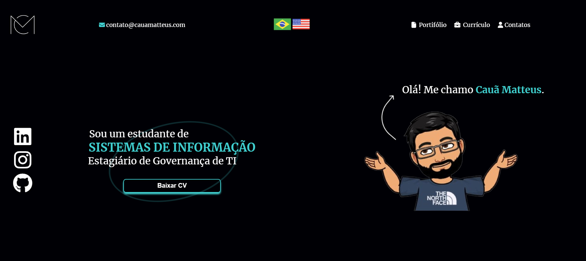

Sou um estudante de
SISTEMAS DE INFORMAÇÃO
Estagiário de Governança de TI
Olá! Me chamo Cauã Matteus.

Página de Login

Desenvolvi essa página de login utilizando as linguagens HTML e CSS. A intenção por trás da criação deste site foi aprimorar minhas habilidades e atender às demandas da disciplina de Sistemas Web na faculdade.
Clique aqui para acessar!
Portifólio
Desenvolvi meu portfólio utilizando as linguagens HTML, CSS e JavaScript. A intenção por trás da criação deste site foi aprimorar minhas habilidades enquanto apresento projetos práticos que já desenvolvi para pessoas interessadas.
Clique aqui para acessar!
Home Sistemas Web

Desenvolvi essa home utilizando as linguagens HTML, CSS e JavaScript. A intenção por trás da criação desta página foi aprimorar minhas habilidades, aprender um pouco sobre JavaScript e para servir de "página organizadora" de projetos web hospedados da faculdade.
Clique aqui para acessar!
Muito prazer! Meu nome é Cauã Matteus Vieira Pereira. Sou brasileiro, nascido em Belo Horizonte, Minas Gerais, em 10 de dezembro de 2003, 20 anos de idade.
Estou no 4º período do bacharelado em Sistemas de Informação. Não hesito em encarar as oportunidades que a faculdade me proporciona. Tenho como objetivo tornar-me uma referência na minha área de atuação.

Estagiário de Governança de TI
Setembro/2023 - AtualTODOS Empreendimentos. Durante o exercício do meu estágio na TODOS Empreendimentos auxiliei no desenvolvimento de um projeto de Gerenciamento de Serviços de TI (ITSM), acompanhando a criação dos processos de requisição de serviço, incidentes, problemas e mudanças, além da consolidação do catálogo de serviços e implantação na ferramenta ServiceNow. Fui responsável durante um período por parte do fluxo de pagamentos internos da TI e encaminhamento de invoices e faturas, também fui responsável pelo acompanhamento da Lei do Bem, levantando projetos de inovação e organizando as necessidades para que a TI pudesse somar positivamente com o crescimento do benefício fiscal.
Representante Discente do CONSEPE
Março/2023 - Março/2024Centro Universitário Católica do Leste de Minas Gerais. Ocupei um assento no Conselho de Ensino, Pesquisa e Extensão, um dos conselhos superiores da instituição, onde fui eleito como representante discente pelos demais conselheiros dos cursos da universidade.
Conselheiro de Curso
Novembro/2022 - Novembro/2023Centro Universitário Católica do Leste de Minas Gerais. Tive o privilégio de exercer o papel de Conselheiro de Curso, atuando como representante dos discentes do curso de Sistemas de Informação e eleito pelos meus pares. Essa experiência foi enriquecedora, proporcionando-me o desenvolvimento de habilidades fundamentais de comunicação e liderança, além de permitir a ampliação da minha rede de contatos.
Gerente de Projetos
Agosto/2022 - AtualCentro Universitário Católica do Leste de Minas Gerais. Estou atualmente liderando um projeto de extensão dedicado ao desenvolvimento de um sistema de verificação de extintores. Essa experiência me oferece uma oportunidade de aplicar minhas habilidades de liderança e trabalho em equipe.
Representante de Turma
Agosto/2022 - AtualCentro Universitário Católica do Leste de Minas Gerais. Atuo como representante de turma desde o início da minha jornada na faculdade. Esta experiência tem me proporcionado a oportunidade de me relacionar com meus colegas, oferecer suporte e desenvolver habilidades essenciais de comunicação e liderança.

Assistente Administrativo
Março/2022 - Agosto/2023Telhas Galvanizadas Araleve. Durante essa trajetória profissional, adquiri habilidades em diversas áreas, incluindo atendimento ao cliente, resolução de problemas, vendas, geração de notas fiscais e boletos bancários, suporte tecnológico, criação de planilhas para controle e organização, elaboração de relatórios mensais de vendas, estoque e caixa, e participação ativa em decisões relacionadas à tecnologia.
LINGUAS ESTRANGEIRAS
Inglês
C1 - Avançado
Espanhol
A2 - Básico
HABILIDADES
HTML

Utilizo a linguagem HTML em projetos individuais e da faculdade. Realizei o Curso em Vídeo e assisto vídeos com temas relacionados, além de estudar Sistemas Web como disciplina do curso.
CSS

Utilizo a linguagem CSS em projetos individuais e da faculdade. Realizei o Curso em Vídeo e assisto vídeos com temas relacionados, além de estudar Sistemas Web como disciplina do curso.
Banco de Dados

Utilizo modelagem de Banco de Dados e SQL em projetos da faculde. Realizei um curso complementar de SQL e Banco de Dados para fixar o conteúdo adquirido na disciplina do curso.
Pacote Office

Utilizo o Excel, Power Point e Word para projetos e trabalhos individuais, da faculdade e do estágio.
G. Workspace

Utilizo as ferramentas e softwares web do Google Workspace para projetos e trabalhos individuais, da faculdade e do estágio.
Canva

Utilizo o Canva para projetos e trabalhos individuais, da faculdade e do estágio. Estou constantemente assistindo vídeos, vendo ideias e montando coisas novas, gosto de usar minha criatividade para melhorar os meus projetos.
Figma

Utilizo o Figma para projetos e trabalhos individuais e da faculdade. Gosto de buscar por ideias e montar as minhas próprias como modelo para desenvolver web.
T. em Equipe

Gosto de dividir o meu conhecimento e aprender com pessoas, acredito que um trabalho bem organizado a várias mãos pode ser muito mais eficiente e prazeroso.
Liderança
Gosto de exercer o papel de liderança e pretendo me tormar um diferencial positivo, busco me desenvolver como pessoa e estudar habilidades valiozas de um bom líder, comunicação, negociação, resolução de conflitos e problemas, etc...
Comunicação

Acredito no poder de uma boa comunicação, tenho facilidade ao me conectar com pessoas e sei me fazer ser entendido.
contato@cauamatteus.com
Local
Nova Era, MG - Brasil
Telefone
+55 (31) 99750-8860